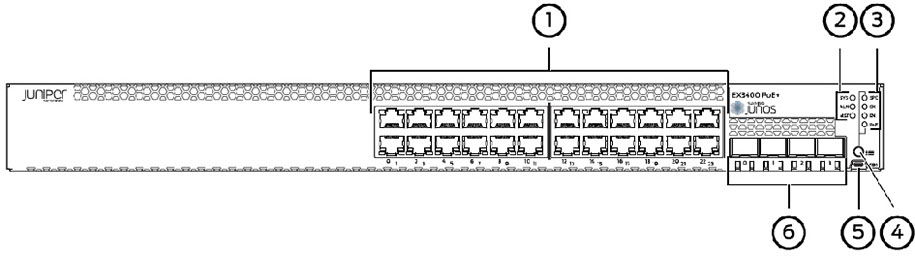
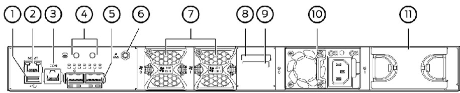

The LAN Network Switch Type 3 is a networking
device that links network segments or network devices.
A switch is a device which receives a data package from any device
connected to it and then transmits it only to the device for which it is intended.
The purpose of the LAN Network Switch Type 3 is to connect the
network between the ground shelter, the upmast cabinet for the IT/Comms equipment
and also the SHQ via WAN.
The LAN Network Switch assembly is composed of the following
components:
- 24 Gigabit ethernet ports
- 4 built-in SFP uplink ports
- 2 chassis status LEDs
- 4 port status mode LEDs
- Factory reset/mode button
The
Shop Replaceable Units (SRUs) are components
that may be replaced on site. The
SRUs in EX3400 switches are
hot-removable and hot-insertable, i.e. they can be replaced without powering off the
switch. The
SRUs in the EX3400 switches are power supplies,
fan modules and transceivers.
Figure 1. Front panel
of an EX3400-24T Switch with 24 Gigabit Ethernet Ports

- 1
- RJ-45 ports
- 2
- Chassis status LEDs
- 3
- Port status mode LEDs
- 4
- Factory Reset/Mode button
- 5
- Mini-USB console port
- 6
- SFP+ uplink ports
Figure 2. Rear Panel of
an EX3400-24T Switch with AC power supply

- 1
- USB port
- 2
- Management ethernet port
- 3
- RJ-45 console port
- 4
- Protective earthing terminal
- 5
- QSFP+ uplink ports
- 6
- ESD point
- 7
- Fan modules
- 8
- CLEI code label
- 9
- Serial number ID Label
- 10
- AC power supply
- 11
- Empty slot for power supply which will be fitted separately as a
means of redundancy power supply
The LAN Network Switch configuration from above
includes two power supplies, two fan modules, an AC power cord and a power cord
retainer clip.